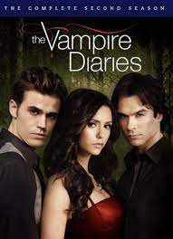

VAMPIRE DIARIES
HOME
PHOTOS
VIDEOS
STORIES
The concepts and characters developed in the series served to launch a media franchise that includes other television series, web series, novels and comic books. The television series The Originals (2013–2018) – which also aired on The CW – was the first major entry in this collection of connected works, followed by a spin-off of The Originals entitled Legacies (2018–2022), which aired on The CW as well.

This article is about the television series. For the book series, see The Vampire Diaries (novel series). For the unrelated film, see Vampire Diary. For the media franchise, see The Vampire Diaries Universe.
The Vampire Diaries
The show name written in gold against a black background and a ribbon of red above the word vampire
Title card used from season 2 through season 8
Genre
Drama
Supernatural
Supernatural
Fantasy
Based on The Vampire Diaries
by L. J. Smith
Developed by
Kevin Williamson
Starring :
Nina Dobrev,
Paul Wesley,
Ian Somerhalder,
Steven R. McQueen,
Sara Canning,
Kat Graham,
Candice King,
Zach Roerig,
Kayla Ewell,
Michael Trevino,
Matt Davis,
Joseph Morgan,
Michael Malarkey
Composer : Michael Suby
Country of origin United States
Original language : English
No. of seasons = 8
No. of episodes = 171(list of episodes)
Production :
Executive producers
Kevin Williamson,
Julie Plec,
Leslie Morgenstein,
Bob Levy,
Caroline Dries,
Melinda Hsu Taylor,
Chad Fiveash,
James Stoteraux,
Producer Julie Plec
Production locations:
Atlanta, Georgia
Covington, Georgia
Vancouver, British Columbia (pilot)
Cinematography
Michael Karasick
Darren Genet
John Smith
Datan Hopson
Rob C. Givens
Running time 41–49 minutes
Production companies :
Outerbanks Entertainment,
Alloy Entertainment,
Bonanza Productions,
CBS Television Studios,
Warner Bros.
Television
Original release
Network The CW
Released : September 10, 2009 –
March 10, 2017
Related
The Vampire Diaries: A Darker Truth
The Originals: The Awakening
Legacies
The Vampire Diaries is an American supernatural teen drama television series developed by Kevin Williamson and Julie Plec, based on the book series of the same name written by L. J. Smith. The series premiered on The CW on September 10, 2009, and concluded on March 10, 2017, having aired 171 episodes over eight seasons.
The pilot episode attracted the largest audience for The CW of any series premiere since the network began in 2006;[1] the first season averaged 3.60 million viewers.[2] It became the most-watched series on the network before being supplanted by Arrow. The show has received numerous award nominations, winning four People's Choice Awards and many Teen Choice Awards.
In April 2015, lead actress Nina Dobrev, who played Elena Gilbert, confirmed that she would be leaving the show after its sixth season. Dobrev returned to record a voiceover for the seventh-season finale and returned as a guest star in the series finale.[3] In March 2016, The CW renewed the series for an eighth season,[4] but in July of that year announced that the eighth season, consisting of 16 episodes, would be the show's last.[5] The final season began airing on October 21, 2016, and ended March 10, 2017.
The concepts and characters developed in the series served to launch a media franchise that includes other television series, web series, novels and comic books. The television series The Originals (2013–2018) – which also aired on The CW – was the first major entry in this collection of connected works, followed by a spin-off of The Originals entitled Legacies (2018–2022), which aired on The CW as well.
Series overview
The series is set in the fictional town of Mystic Falls, Virginia, a town charged with supernatural history. It follows the life of Elena Gilbert (Nina Dobrev), a teenage girl who has just lost both parents in a car crash, as she falls in love with a 161-year-old vampire named Stefan Salvatore (Paul Wesley), who she thinks is just a normal human. Their relationship becomes increasingly intricate as Stefan's mysterious older brother Damon Salvatore (Ian Somerhalder) returns to Mystic Falls with a plan to bring back their past love, Katherine Pierce, who is Elena's doppelgänger.